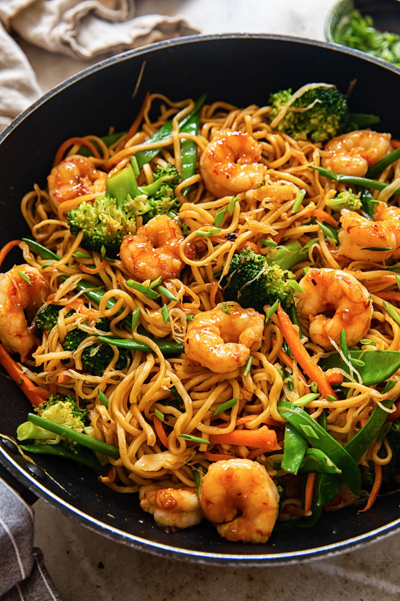

Shrimp chow mein

Description:
This is a very quick and tasty shrimp chow mein recipe.
You can serve over rice instead of chow mein noodles for a different take on the dish.
Ingredients:
- 1 (6 ounce) package chow mein noodles
- ¼ cup vegetable oil
- 1 cup chopped onions
- 2 pounds uncooked medium shrimp, peeled and deveined
- 1 (14 ounce) can beef consomme
- 1 cup diced celery
- ½ teaspoon salt
- 1 (8 ounce) package bean sprouts
- 1 (4 ounce) can sliced mushrooms, drained
- ⅓ cup cold water
- 2 tablespoons cornstarch
- 2 teaspoons soy sauce
- 1 teaspoon white sugar
Steps:
- Bring a large pot of water to a boil. Add chow mein noodles and cook over medium
heat until cooked through but still firm to the bite, 4 to 5 minutes. Drain and
rinse with cold water.
- While noodles cook, heat oil in a large pot over medium heat. Add onions and cook
and stir until golden, 5 to 7 minutes. Add shrimp and cook and stir until they are
bright pink on the outside and the meat is opaque, about 5 minutes. Add consomme,
- Blend water, cornstarch, soy sauce, and sugar together in a small bowl.
Add mixture to the pot and simmer for 5 minutes. Serve over cooked chow mein noodles.